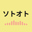

ソトオト
Sounds from abroad, on the go.
国
QUICK ACCESS
お気に入り
すべて
FOR YOU
あなたへのおすすめ
RECENT
最近聴いた局
GENRE
ホームへ
さらに表示
検索
世界中のラジオ局から、名前の一部で探せます
ライブラリ
お気に入り
最近聴いた局
ホーム
ジャンル
検索
ライブラリ
NOW PLAYING
● LIVE
☆
おやすみタイマー
ポモドーロ
オフ
15分
30分
45分
60分
90分
MORE LIKE THIS
同じジャンルの局
GENRE
ジャンルを選ぶ
×